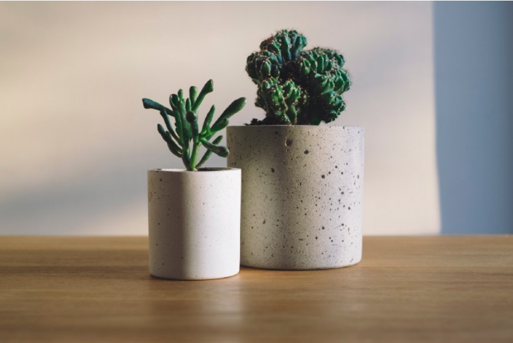

Happiness | Interior Design
An argument for a greener living room
You might not realize how commonly people add natural elements to man-made things: the bouquet in your living room, the ‘apple’ on my laptop or the image in this article. This is what Science knows as ‘Biophilia’.
Biophilia is the theory that humans are innately attracted to the natural world; people like to approximate plants, animals and the natural environment.
Perhaps you are not convinced by the Biophilia theory. That’s alright: what follows is a list of small-scoped studies that all support the hypothesis from their own angle. The (linked) studies found that biophilic elements enhance:
You can reap these benefits today!The studies show that small, simple retouches in your living space can trigger the desired effects. In other words, adding some plants here and there should do the trick!
If you think it’s worth the effort, you could redesign your home more thoroughly. These tips do get quite advanced, but perhaps they will help some of you fanatic DIYers.